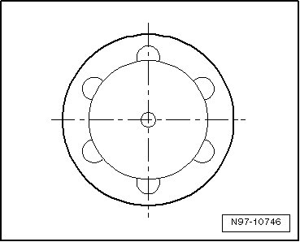
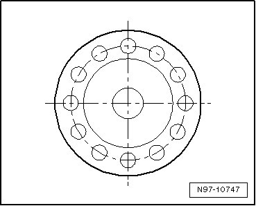

Oxygen Sensor Unit Protective Pipes
Oxygen Sensor Unit Protective Pipes
• In addition to using the part number, the protective pipe can also be used for identification.
Version D1 - 6 openings, 3.5 mm each
Only used with the 4-pin oxygen sensor
Version D2, 6 openings, 2 mm each
Used with 4-pin and 6-pin universal oxygen sensors.

Version D4, 12 openings ,1.4 mm each
Used with 4-pin and 6-pin universal oxygen sensors.
